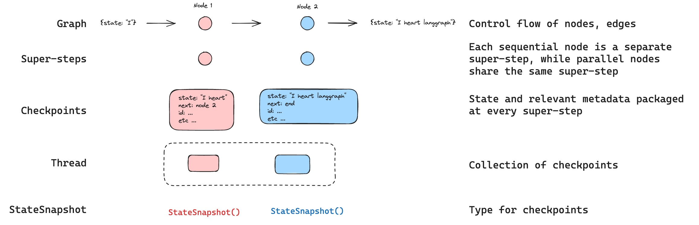

Persistence¶
LangGraph has a built-in persistence layer, implemented through checkpointers. When you compile graph with a checkpointer, the checkpointer saves a checkpoint of the graph state at every super-step. Those checkpoints are saved to a thread, which can be accessed after graph execution. Because threads allow access to graph's state after execution, several powerful capabilities including human-in-the-loop, memory, time travel, and fault-tolerance are all possible. See this how-to guide for an end-to-end example on how to add and use checkpointers with your graph. Below, we'll discuss each of these concepts in more detail.

Threads¶
A thread is a unique ID or thread identifier assigned to each checkpoint saved by a checkpointer. When invoking graph with a checkpointer, you must specify a thread_id as part of the configurable portion of the config:
Checkpoints¶
Checkpoint is a snapshot of the graph state saved at each super-step and is represented by StateSnapshot object with the following key properties:
config: Config associated with this checkpoint.metadata: Metadata associated with this checkpoint.values: Values of the state channels at this point in time.nextA tuple of the node names to execute next in the graph.tasks: A tuple ofPregelTaskobjects that contain information about next tasks to be executed. If the step was previously attempted, it will include error information. If a graph was interrupted dynamically from within a node, tasks will contain additional data associated with interrupts.
Let's see what checkpoints are saved when a simple graph is invoked as follows:
from langgraph.graph import StateGraph, START, END
from langgraph.checkpoint.memory import MemorySaver
from typing import Annotated
from typing_extensions import TypedDict
from operator import add
class State(TypedDict):
foo: int
bar: Annotated[list[str], add]
def node_a(state: State):
return {"foo": "a", "bar": ["a"]}
def node_b(state: State):
return {"foo": "b", "bar": ["b"]}
workflow = StateGraph(State)
workflow.add_node(node_a)
workflow.add_node(node_b)
workflow.add_edge(START, "node_a")
workflow.add_edge("node_a", "node_b")
workflow.add_edge("node_b", END)
checkpointer = MemorySaver()
graph = workflow.compile(checkpointer=checkpointer)
config = {"configurable": {"thread_id": "1"}}
graph.invoke({"foo": ""}, config)
API Reference: StateGraph | START | END | MemorySaver
After we run the graph, we expect to see exactly 4 checkpoints:
- empty checkpoint with
STARTas the next node to be executed - checkpoint with the user input
{'foo': '', 'bar': []}andnode_aas the next node to be executed - checkpoint with the outputs of
node_a{'foo': 'a', 'bar': ['a']}andnode_bas the next node to be executed - checkpoint with the outputs of
node_b{'foo': 'b', 'bar': ['a', 'b']}and no next nodes to be executed
Note that we bar channel values contain outputs from both nodes as we have a reducer for bar channel.
Get state¶
When interacting with the saved graph state, you must specify a thread identifier. You can view the latest state of the graph by calling graph.get_state(config). This will return a StateSnapshot object that corresponds to the latest checkpoint associated with the thread ID provided in the config or a checkpoint associated with a checkpoint ID for the thread, if provided.
# get the latest state snapshot
config = {"configurable": {"thread_id": "1"}}
graph.get_state(config)
# get a state snapshot for a specific checkpoint_id
config = {"configurable": {"thread_id": "1", "checkpoint_id": "1ef663ba-28fe-6528-8002-5a559208592c"}}
graph.get_state(config)
In our example, the output of get_state will look like this:
StateSnapshot(
values={'foo': 'b', 'bar': ['a', 'b']},
next=(),
config={'configurable': {'thread_id': '1', 'checkpoint_ns': '', 'checkpoint_id': '1ef663ba-28fe-6528-8002-5a559208592c'}},
metadata={'source': 'loop', 'writes': {'node_b': {'foo': 'b', 'bar': ['b']}}, 'step': 2},
created_at='2024-08-29T19:19:38.821749+00:00',
parent_config={'configurable': {'thread_id': '1', 'checkpoint_ns': '', 'checkpoint_id': '1ef663ba-28f9-6ec4-8001-31981c2c39f8'}}, tasks=()
)
Get state history¶
You can get the full history of the graph execution for a given thread by calling graph.get_state_history(config). This will return a list of StateSnapshot objects associated with the thread ID provided in the config. Importantly, the checkpoints will be ordered chronologically with the most recent checkpoint / StateSnapshot being the first in the list.
In our example, the output of get_state_history will look like this:
[
StateSnapshot(
values={'foo': 'b', 'bar': ['a', 'b']},
next=(),
config={'configurable': {'thread_id': '1', 'checkpoint_ns': '', 'checkpoint_id': '1ef663ba-28fe-6528-8002-5a559208592c'}},
metadata={'source': 'loop', 'writes': {'node_b': {'foo': 'b', 'bar': ['b']}}, 'step': 2},
created_at='2024-08-29T19:19:38.821749+00:00',
parent_config={'configurable': {'thread_id': '1', 'checkpoint_ns': '', 'checkpoint_id': '1ef663ba-28f9-6ec4-8001-31981c2c39f8'}},
tasks=(),
),
StateSnapshot(
values={'foo': 'a', 'bar': ['a']}, next=('node_b',),
config={'configurable': {'thread_id': '1', 'checkpoint_ns': '', 'checkpoint_id': '1ef663ba-28f9-6ec4-8001-31981c2c39f8'}},
metadata={'source': 'loop', 'writes': {'node_a': {'foo': 'a', 'bar': ['a']}}, 'step': 1},
created_at='2024-08-29T19:19:38.819946+00:00',
parent_config={'configurable': {'thread_id': '1', 'checkpoint_ns': '', 'checkpoint_id': '1ef663ba-28f4-6b4a-8000-ca575a13d36a'}},
tasks=(PregelTask(id='6fb7314f-f114-5413-a1f3-d37dfe98ff44', name='node_b', error=None, interrupts=()),),
),
StateSnapshot(
values={'foo': '', 'bar': []},
next=('node_a',),
config={'configurable': {'thread_id': '1', 'checkpoint_ns': '', 'checkpoint_id': '1ef663ba-28f4-6b4a-8000-ca575a13d36a'}},
metadata={'source': 'loop', 'writes': None, 'step': 0},
created_at='2024-08-29T19:19:38.817813+00:00',
parent_config={'configurable': {'thread_id': '1', 'checkpoint_ns': '', 'checkpoint_id': '1ef663ba-28f0-6c66-bfff-6723431e8481'}},
tasks=(PregelTask(id='f1b14528-5ee5-579c-949b-23ef9bfbed58', name='node_a', error=None, interrupts=()),),
),
StateSnapshot(
values={'bar': []},
next=('__start__',),
config={'configurable': {'thread_id': '1', 'checkpoint_ns': '', 'checkpoint_id': '1ef663ba-28f0-6c66-bfff-6723431e8481'}},
metadata={'source': 'input', 'writes': {'foo': ''}, 'step': -1},
created_at='2024-08-29T19:19:38.816205+00:00',
parent_config=None,
tasks=(PregelTask(id='6d27aa2e-d72b-5504-a36f-8620e54a76dd', name='__start__', error=None, interrupts=()),),
)
]

Replay¶
It's also possible to play-back a prior graph execution. If we invoke a graph with a thread_id and a checkpoint_id, then we will re-play the previously executed steps before a checkpoint that corresponds to the checkpoint_id, and only execute the steps after the checkpoint.
thread_idis the ID of a thread.checkpoint_idis an identifier that refers to a specific checkpoint within a thread.
You must pass these when invoking the graph as part of the configurable portion of the config:
config = {"configurable": {"thread_id": "1", "checkpoint_id": "0c62ca34-ac19-445d-bbb0-5b4984975b2a"}}
graph.invoke(None, config=config)
Importantly, LangGraph knows whether a particular step has been executed previously. If it has, LangGraph simply re-plays that particular step in the graph and does not re-execute the step, but only for the steps before the provided checkpoint_id. All of the steps after checkpoint_id will be executed (i.e., a new fork), even if they have been executed previously. See this how to guide on time-travel to learn more about replaying.

Update state¶
In addition to re-playing the graph from specific checkpoints, we can also edit the graph state. We do this using graph.update_state(). This method accepts three different arguments:
config¶
The config should contain thread_id specifying which thread to update. When only the thread_id is passed, we update (or fork) the current state. Optionally, if we include checkpoint_id field, then we fork that selected checkpoint.
values¶
These are the values that will be used to update the state. Note that this update is treated exactly as any update from a node is treated. This means that these values will be passed to the reducer functions, if they are defined for some of the channels in the graph state. This means that update_state does NOT automatically overwrite the channel values for every channel, but only for the channels without reducers. Let's walk through an example.
Let's assume you have defined the state of your graph with the following schema (see full example above):
from typing import Annotated
from typing_extensions import TypedDict
from operator import add
class State(TypedDict):
foo: int
bar: Annotated[list[str], add]
Let's now assume the current state of the graph is
If you update the state as below:
Then the new state of the graph will be:
The foo key (channel) is completely changed (because there is no reducer specified for that channel, so update_state overwrites it). However, there is a reducer specified for the bar key, and so it appends "b" to the state of bar.
as_node¶
The final thing you can optionally specify when calling update_state is as_node. If you provided it, the update will be applied as if it came from node as_node. If as_node is not provided, it will be set to the last node that updated the state, if not ambiguous. The reason this matters is that the next steps to execute depend on the last node to have given an update, so this can be used to control which node executes next. See this how to guide on time-travel to learn more about forking state.

Memory Store¶

A state schema specifies a set of keys that are populated as a graph is executed. As discussed above, state can be written by a checkpointer to a thread at each graph step, enabling state persistence.
But, what if we want to retain some information across threads? Consider the case of a chatbot where we want to retain specific information about the user across all chat conversations (e.g., threads) with that user!
With checkpointers alone, we cannot share information across threads. This motivates the need for the Store interface. As an illustration, we can define an InMemoryStore to store information about a user across threads. We simply compile our graph with a checkpointer, as before, and with our new in_memory_store variable.
Basic Usage¶
First, let's showcase this in isolation without using LangGraph.
Memories are namespaced by a tuple, which in this specific example will be (<user_id>, "memories"). The namespace can be any length and represent anything, does not have be user specific.
We use the store.put method to save memories to our namespace in the store. When we do this, we specify the namespace, as defined above, and a key-value pair for the memory: the key is simply a unique identifier for the memory (memory_id) and the value (a dictionary) is the memory itself.
memory_id = str(uuid.uuid4())
memory = {"food_preference" : "I like pizza"}
in_memory_store.put(namespace_for_memory, memory_id, memory)
We can read out memories in our namespace using the store.search method, which will return all memories for a given user as a list. The most recent memory is the last in the list.
memories = in_memory_store.search(namespace_for_memory)
memories[-1].dict()
{'value': {'food_preference': 'I like pizza'},
'key': '07e0caf4-1631-47b7-b15f-65515d4c1843',
'namespace': ['1', 'memories'],
'created_at': '2024-10-02T17:22:31.590602+00:00',
'updated_at': '2024-10-02T17:22:31.590605+00:00'}
Each memory type is a Python class (Item) with certain attributes. We can access it as a dictionary by converting via .dict as above.
The attributes it has are:
value: The value (itself a dictionary) of this memorykey: A unique key for this memory in this namespacenamespace: A list of strings, the namespace of this memory typecreated_at: Timestamp for when this memory was createdupdated_at: Timestamp for when this memory was updated
Semantic Search¶
Beyond simple retrieval, the store also supports semantic search, allowing you to find memories based on meaning rather than exact matches. To enable this, configure the store with an embedding model:
from langchain.embeddings import init_embeddings
store = InMemoryStore(
index={
"embed": init_embeddings("openai:text-embedding-3-small"), # Embedding provider
"dims": 1536, # Embedding dimensions
"fields": ["food_preference", "$"] # Fields to embed
}
)
API Reference: init_embeddings
Now when searching, you can use natural language queries to find relevant memories:
# Find memories about food preferences
# (This can be done after putting memories into the store)
memories = store.search(
namespace_for_memory,
query="What does the user like to eat?",
limit=3 # Return top 3 matches
)
You can control which parts of your memories get embedded by configuring the fields parameter or by specifying the index parameter when storing memories:
# Store with specific fields to embed
store.put(
namespace_for_memory,
str(uuid.uuid4()),
{
"food_preference": "I love Italian cuisine",
"context": "Discussing dinner plans"
},
index=["food_preference"] # Only embed "food_preferences" field
)
# Store without embedding (still retrievable, but not searchable)
store.put(
namespace_for_memory,
str(uuid.uuid4()),
{"system_info": "Last updated: 2024-01-01"},
index=False
)
Using in LangGraph¶
With this all in place, we use the in_memory_store in LangGraph. The in_memory_store works hand-in-hand with the checkpointer: the checkpointer saves state to threads, as discussed above, and the in_memory_store allows us to store arbitrary information for access across threads. We compile the graph with both the checkpointer and the in_memory_store as follows.
from langgraph.checkpoint.memory import MemorySaver
# We need this because we want to enable threads (conversations)
checkpointer = MemorySaver()
# ... Define the graph ...
# Compile the graph with the checkpointer and store
graph = graph.compile(checkpointer=checkpointer, store=in_memory_store)
API Reference: MemorySaver
We invoke the graph with a thread_id, as before, and also with a user_id, which we'll use to namespace our memories to this particular user as we showed above.
# Invoke the graph
user_id = "1"
config = {"configurable": {"thread_id": "1", "user_id": user_id}}
# First let's just say hi to the AI
for update in graph.stream(
{"messages": [{"role": "user", "content": "hi"}]}, config, stream_mode="updates"
):
print(update)
We can access the in_memory_store and the user_id in any node by passing store: BaseStore and config: RunnableConfig as node arguments. Here's how we might use semantic search in a node to find relevant memories:
def update_memory(state: MessagesState, config: RunnableConfig, *, store: BaseStore):
# Get the user id from the config
user_id = config["configurable"]["user_id"]
# Namespace the memory
namespace = (user_id, "memories")
# ... Analyze conversation and create a new memory
# Create a new memory ID
memory_id = str(uuid.uuid4())
# We create a new memory
store.put(namespace, memory_id, {"memory": memory})
As we showed above, we can also access the store in any node and use the store.search method to get memories. Recall the the memories are returned as a list of objects that can be converted to a dictionary.
memories[-1].dict()
{'value': {'food_preference': 'I like pizza'},
'key': '07e0caf4-1631-47b7-b15f-65515d4c1843',
'namespace': ['1', 'memories'],
'created_at': '2024-10-02T17:22:31.590602+00:00',
'updated_at': '2024-10-02T17:22:31.590605+00:00'}
We can access the memories and use them in our model call.
def call_model(state: MessagesState, config: RunnableConfig, *, store: BaseStore):
# Get the user id from the config
user_id = config["configurable"]["user_id"]
# Search based on the most recent message
memories = store.search(
namespace,
query=state["messages"][-1].content,
limit=3
)
info = "\n".join([d.value["memory"] for d in memories])
# ... Use memories in the model call
If we create a new thread, we can still access the same memories so long as the user_id is the same.
# Invoke the graph
config = {"configurable": {"thread_id": "2", "user_id": "1"}}
# Let's say hi again
for update in graph.stream(
{"messages": [{"role": "user", "content": "hi, tell me about my memories"}]}, config, stream_mode="updates"
):
print(update)
When we use the LangGraph Platform, either locally (e.g., in LangGraph Studio) or with LangGraph Cloud, the base store is available to use by default and does not need to be specified during graph compilation. To enable semantic search, however, you do need to configure the indexing settings in your langgraph.json file. For example:
{
...
"store": {
"index": {
"embed": "openai:text-embeddings-3-small",
"dims": 1536,
"fields": ["$"]
}
}
}
See the deployment guide for more details and configuration options.
Checkpointer libraries¶
Under the hood, checkpointing is powered by checkpointer objects that conform to BaseCheckpointSaver interface. LangGraph provides several checkpointer implementations, all implemented via standalone, installable libraries:
langgraph-checkpoint: The base interface for checkpointer savers (BaseCheckpointSaver) and serialization/deserialization interface (SerializerProtocol). Includes in-memory checkpointer implementation (InMemorySaver) for experimentation. LangGraph comes withlanggraph-checkpointincluded.langgraph-checkpoint-sqlite: An implementation of LangGraph checkpointer that uses SQLite database (SqliteSaver / AsyncSqliteSaver). Ideal for experimentation and local workflows. Needs to be installed separately.langgraph-checkpoint-postgres: An advanced checkpointer that uses Postgres database (PostgresSaver / AsyncPostgresSaver), used in LangGraph Cloud. Ideal for using in production. Needs to be installed separately.
Checkpointer interface¶
Each checkpointer conforms to BaseCheckpointSaver interface and implements the following methods:
.put- Store a checkpoint with its configuration and metadata..put_writes- Store intermediate writes linked to a checkpoint (i.e. pending writes)..get_tuple- Fetch a checkpoint tuple using for a given configuration (thread_idandcheckpoint_id). This is used to populateStateSnapshotingraph.get_state()..list- List checkpoints that match a given configuration and filter criteria. This is used to populate state history ingraph.get_state_history()
If the checkpointer is used with asynchronous graph execution (i.e. executing the graph via .ainvoke, .astream, .abatch), asynchronous versions of the above methods will be used (.aput, .aput_writes, .aget_tuple, .alist).
Note
For running your graph asynchronously, you can use MemorySaver, or async versions of Sqlite/Postgres checkpointers -- AsyncSqliteSaver / AsyncPostgresSaver checkpointers.
Serializer¶
When checkpointers save the graph state, they need to serialize the channel values in the state. This is done using serializer objects.
langgraph_checkpoint defines protocol for implementing serializers provides a default implementation (JsonPlusSerializer) that handles a wide variety of types, including LangChain and LangGraph primitives, datetimes, enums and more.
Capabilities¶
Human-in-the-loop¶
First, checkpointers facilitate human-in-the-loop workflows workflows by allowing humans to inspect, interrupt, and approve graph steps. Checkpointers are needed for these workflows as the human has to be able to view the state of a graph at any point in time, and the graph has to be to resume execution after the human has made any updates to the state. See these how-to guides for concrete examples.
Memory¶
Second, checkpointers allow for "memory" between interactions. In the case of repeated human interactions (like conversations) any follow up messages can be sent to that thread, which will retain its memory of previous ones. See this how-to guide for an end-to-end example on how to add and manage conversation memory using checkpointers.
Time Travel¶
Third, checkpointers allow for "time travel", allowing users to replay prior graph executions to review and / or debug specific graph steps. In addition, checkpointers make it possible to fork the graph state at arbitrary checkpoints to explore alternative trajectories.
Fault-tolerance¶
Lastly, checkpointing also provides fault-tolerance and error recovery: if one or more nodes fail at a given superstep, you can restart your graph from the last successful step. Additionally, when a graph node fails mid-execution at a given superstep, LangGraph stores pending checkpoint writes from any other nodes that completed successfully at that superstep, so that whenever we resume graph execution from that superstep we don't re-run the successful nodes.
Pending writes¶
Additionally, when a graph node fails mid-execution at a given superstep, LangGraph stores pending checkpoint writes from any other nodes that completed successfully at that superstep, so that whenever we resume graph execution from that superstep we don't re-run the successful nodes.